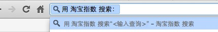

让你的搜索出现在Chrome地址栏智能搜索中
先看看最终效果

很炫对吧！
怎样做到的呢？
- 在页面html的head中增加 "search link"
<link rel="search" type="application/opensearchdescription+xml" href="/opensearch.xml" title="淘宝指数" />
- opensearch.xml 内容大致如下，你相应修改成你的内容就可以了
<?xml version="1.0" encoding="UTF-8"?>
<OpenSearchDescription xmlns="http://a9.com/-/spec/opensearch/1.1/">
<ShortName>淘宝指数</ShortName>
<Description>淘宝指数搜索</Description>
<Tags>淘宝指数</Tags>
<Contact>suqian.yf@taobao.com</Contact>
<Url type="text/html" template="http://shu.taobao.com/search?query={searchTerms}&from=opensearch"/>
<LongName>淘宝指数搜索</LongName>
<Image height="16" width="16" type="image/x-icon">http://shu.taobao.com/favicon.ico</Image>
<Query role="example" searchTerms="连衣裙" />
<Developer>淘宝指数</Developer>
<Attribution>source: shu.taobao.com</Attribution>
<SyndicationRight>open</SyndicationRight>
<AdultContent>false</AdultContent>
<Language>*</Language>
<OutputEncoding>UTF-8</OutputEncoding>
<InputEncoding>UTF-8</InputEncoding>
</OpenSearchDescription>
- 打开你的页面，在地址栏输入域名，然后按tab，出现了吧！
有爱
希望本文对你有用 ^-^